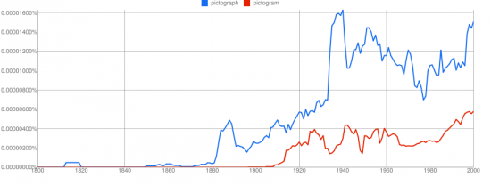

Pictogram or Pictograph - Which is right?
Pictogram's are dead. Beaten back by our relentless drive to use the correct suffix or descriptive term.
Viva la Pictograph revolution..
{kind=link}
What the Google search evidence shows us: Pictogram is a more popular term and was used a whole 2 years before pictograph became popular so what happened?
It's clear that both pictograms and pictographs are becomming less popular from a search perspective. Why could that be?

So my prediction is that by 2020 pictograph will become the chosen way of describing using pictures to represent counts.
We probably have the Americans to blame for this although I do use "color" instead of "colour" by default now and I have come to be rather fond of the way our language is being bastardized into a more generic, future oriented, mash-up.
All of this research just because I made a free online pictogram/pictograph.
In fact the British among us can see we really only started using pictogram more than pictograph in the 50s then it got dropped somewhat then picked back up in the 80s.. British English:

Whereas American's have been consistent.. American English: 
{kind=link}
Would you agree that pictograph is "correct" term? I would say that a graph is the correct suffix to use. I would say this based on the fact that if you go to an image search and search for graph you will get a bunch of graphs but if you search for gram you will get mostly outputs from measurements (ie gram in weight) & mammograms and the like..
It's time to come off the fence pictogram'ers, it's pictograph and you love it.